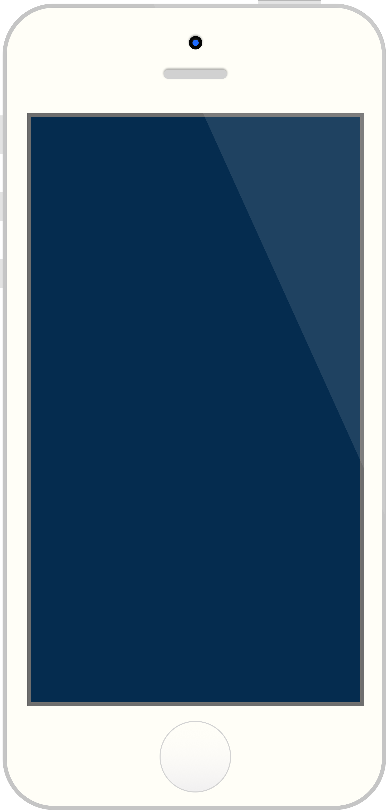

iOS-like sliding animation
This is not your usual sliding animation. The idea comes straight from Cupertino's designers, but since we are web workers and don't have access to the swift magic of Cocoa (pun intended) this is a css replica for your web app needs.
The whole thing is actually quite simple, but the result looks very nice. We simply move the hiding slide slightly to the left when the other one comes in from the right. We also add a subtle shadow to the coming slide, just like in iOS 7 (and soon 8).
